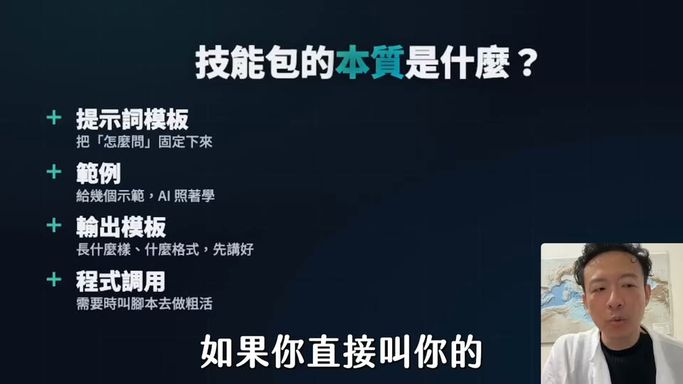
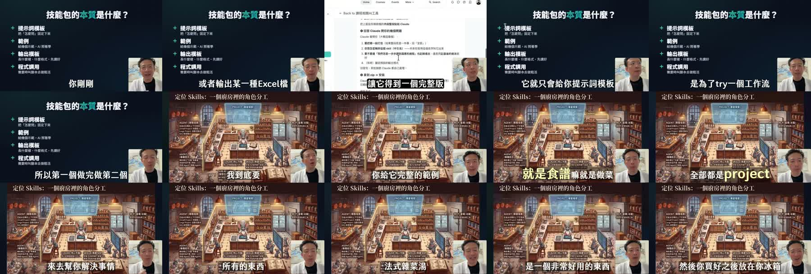

Facebook｜李佳達：用米其林廚房理解 Skill、Project、Agent 與 MCP

一句話摘要
把 AI 系統想成廚房：Skill 是食譜，Project 是廚房配置，Agent 是會判斷與調度的廚師，MCP 是外部倉庫與冰箱。這個比喻能快速建立概念分工，但導入時要回到各平台的實際文件與權限模型。
來源脈絡
| 欄位 | 內容 |
|---|---|
| 原始分享連結 | https://www.facebook.com/share/v/14oryYr4VBG/?mibextid=wwXIfr |
| Canonical URL | https://www.facebook.com/reel/1089007086919812 |
| 作者 | 李佳達 |
| Reel ID | 1089007086919812 |
| 影片長度 | 約 6 分 20 秒（yt-dlp metadata：380.373 秒） |
| Facebook OpenGraph | 約 1,205 個心情、496 次分享；頁面未顯示完整觀看數 |
| 對外 CTA | AI 超級大腦免費線上體驗課；連結已導向 ShiFu 課程頁 |
| 擷取狀態 | yt-dlp 可取得影片；已保存封面、影片拼貼與 Whisper 逐字稿摘錄 |
貼文重點
### 1. Skill：食譜，也是可重用的技能包
影片把 Skill 比喻為做菜時才拿出來的食譜：不用把所有內容長期攤在工作區，而是在需要時取用，用完再收起來。影片主張一個完整 Skill 不應只有提示詞，還要包含：
- 提示詞模板：把「怎麼問、怎麼做」固定下來。
- 範例或參考資料：讓模型理解預期品質與做法。
- 輸出格式：先定義要產出 Markdown、PDF、HTML、JSON 或其他格式。
- 工具／程式調用：必要時由腳本處理重複、機械性的工作。
因此，Skill 比單段 Prompt 更接近「可重複執行的能力包」或工作流元件。
### 2. Project：整個廚房的配置與上下文
Project 被比喻為廚房：食材、廚具、背景資料與固定設定都放在其中。影片的實務建議是，Project 只保留真正需要長期存在的背景；能固化、可重複取用的內容，優先移到 Skill，避免每次對話都重新載入過多資料，增加上下文與 token 成本。
這個比喻最值得保留的不是「Project 一定會怎麼載入」的技術細節，而是邊界設計原則：
> 穩定且可重用的流程放 Skill；正在處理的議題、必要背景與專案資料放 Project。
### 3. Agent：會判斷的廚師
Agent 不只是照食譜執行，而是能根據情境判斷要使用哪個 Skill、資料庫或工具。影片將 Agent 粗分為：
- 主 Agent：專職助手，負責需要較多判斷與品質把關的工作。
- Sub-Agent：執行明確、機械性的子任務。
- 管家型 Agent：負責調度其他 Agent、Skill 與模型，依任務難度分派工作，並控制成本與資源。
影片特別提醒：對外文章、課程文案或其他公開輸出，應由主 Agent 負責或至少由主 Agent 審核；Sub-Agent 適合做拆解、整理與重複工作，不代表適合直接決定最終對外說法。
### 4. MCP：外部倉庫與冰箱
影片把 MCP 比喻為倉庫與冰箱：別人已經做好的工具或資源，不必全部自己重做，可以透過標準化介面取用。官方 MCP 文件將 MCP 定位為讓 AI 應用連接外部資料來源、工具與工作流的開放協定；因此影片的「外部工具／預製菜」比喻能幫助初學者理解其方向，但實際可用能力仍取決於所連接的 MCP server、授權範圍與平台支援。

影片逐字稿與擷取備註
影片語音由本機 Whisper tiny 模型自動轉錄，以下是依影片語意校正後的重點，不是逐字官方字幕。ASR 對 Skill、Agent、MCP、Project 等英文術語有明顯誤聽，因此不把原始 ASR 當成可直接引用的逐字稿。
影片前段說明：若只讓 AI 產生一段提示詞，通常不足以穩定控制輸出格式、參考資料與程式調用；完整 Skill 應該是一個包含結構、範例、輸出規格與工具流程的可重用能力包。影片後段再用廚房說明 Project、Skill、MCP 與 Agent 的分工，並延伸到主 Agent、Sub-Agent、管家 Agent 的任務調度。
官方來源交叉驗證
### MCP
MCP 官方入門文件：
https://modelcontextprotocol.io/docs/getting-started/intro
可確認的部分是：MCP 是用來連接 AI 應用與外部資料、工具及工作流的開放協定。影片的「倉庫／冰箱」是教學比喻，不等於 MCP 會自動安全地提供所有外部能力。
### Agent
OpenAI Agents SDK 文件：
https://openai.github.io/openai-agents-python/
官方文件展示 Agent、工具、handoff 與 guardrails 等實作概念，支持影片對 Agent「能使用工具並依情境完成任務」的方向性描述；但不同框架的 Agent 定義、記憶、上下文與委派機制並不完全相同。
### Skill
影片使用的是跨工具的教學概念。不同產品可能把 Skill 實作成提示詞模板、資料夾、技能檔、工具集合或工作流；不要把影片所說的四個組件直接當成所有平台的硬性規格。建立 Skill 時，應以目標平台的官方格式與載入規則為準。
為什麼值得收進 AI 學習雷達
- 它把容易混淆的四個名詞放在同一張心智模型中，適合做入門教學。
- 它指出 Prompt、可重用 Skill、Project 背景與 Agent 調度之間的層次差異。
- 它提醒「任務拆解」與「最終對外品質」不一定由同一個 Agent 負責，這對多代理工作流很實用。
- 它也能對應到實際工程設計：先整理穩定規則，再決定哪些資料常駐、哪些內容按需載入，以及哪些工具需要額外授權。
導入檢核表
- 先把重複任務拆成 Skill：輸入條件、步驟、範例、輸出格式、失敗處理都寫清楚。
- Project 只放當前專案真正需要的背景，避免把所有資料永久塞進上下文。
- 將可逆、低風險的整理工作交給 Sub-Agent；對外輸出保留主 Agent 或人工審核。
- 連接 MCP 或外部工具前，逐項確認 server 來源、OAuth scope、讀寫能力與撤銷方式。
- 先用假資料或 sandbox 測試，不要一開始就連接含個資、金流或生產環境的主帳號。
- 用實際 token、延遲、失敗率與人工審核時間衡量架構，不要只依賴「省 token」或「全自動」的宣傳說法。
限制與判讀
- 影片是教學／課程導流內容；「米其林廚房」是幫助理解的比喻，不是 Skill、Project、Agent、MCP 的業界統一定義。
- Facebook 頁面登入牆限制了完整互動資訊；本文以公開 OpenGraph、可下載影片、影片音訊與官方文件交叉整理。
- 影片中的「完整 Skill 是 ZIP／資料結構」可能適用於特定工具或課程示範，不應直接推論為所有 AI 平台的格式要求。
- MCP 或 Agent 一旦具備外部寫入能力，就會增加誤操作、資料外洩與權限擴張風險；實務上必須加入最小權限、沙盒與人工確認。
原始連結
Facebook 分享連結：
https://www.facebook.com/share/v/14oryYr4VBG/?mibextid=wwXIfr
Canonical Reel：
https://www.facebook.com/reel/1089007086919812
MCP 官方入門：
https://modelcontextprotocol.io/docs/getting-started/intro
OpenAI Agents SDK：
https://openai.github.io/openai-agents-python/
課程導流頁（原始短連結已追蹤導向）：